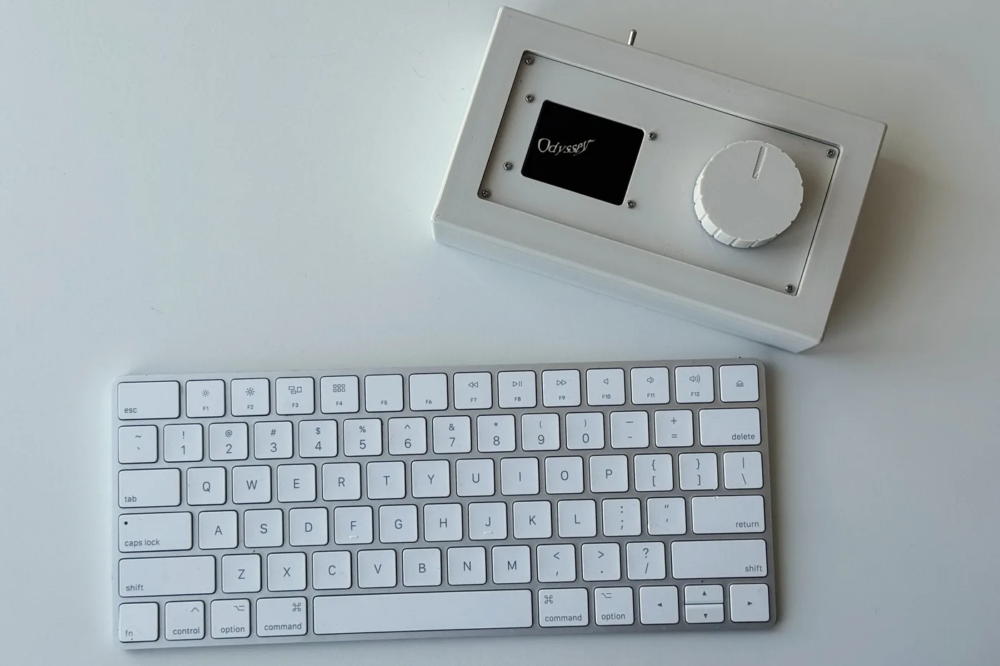
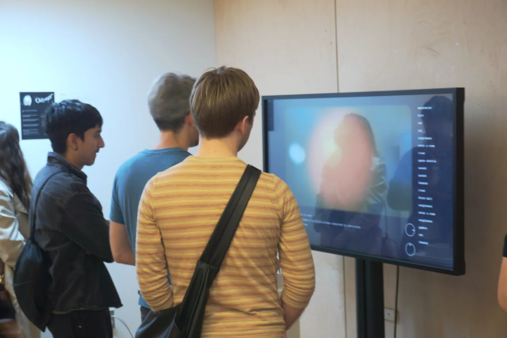
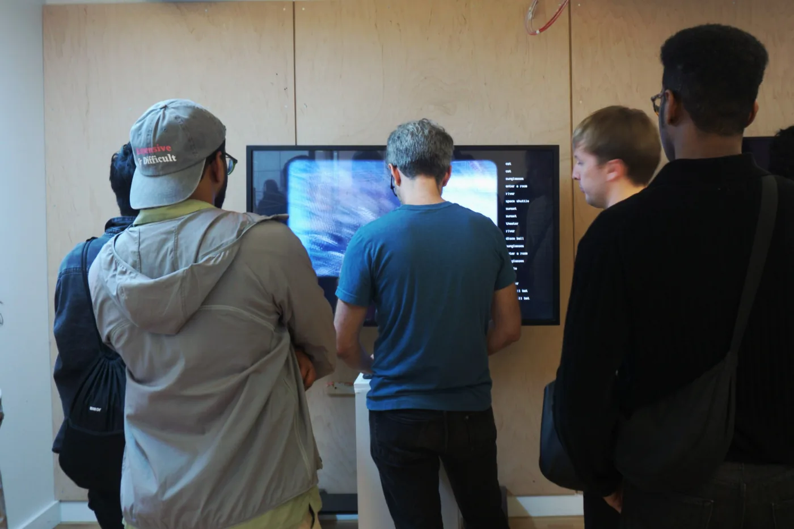
Motivation
Even though we cannot travel back in time, the idea of navigation on the time dimension is not unfamiliar to us. When watching a Youtube video, we can intuitively drag the video playback timeline forward and backward.
On the other side we have our current interactive storytelling paradigm, exemplified by Black Mirror: Bandersnatch. At discrete timestamp, it explicitly asks audiences to choose from an exhaustive list of options, in order to provide a sense of possibility.
One capability of neural network is abstraction. By encoding information — images, text, sound — into high dimensional space, machine learning algorithms can encapsulate their abstracted meanings and model the relationships between them. Even though these concepts are usually being mapped onto a manifold, which is a curved shape that can exist in a space with more than 3 dimensions, we still may be able to navigate through this space since it is essentially a representation of knowledge and their relationship.
Odyssey is exploring the question: Can we use computation to create interactive storytelling experiences that leverage our sense of navigation?
Designing the Story
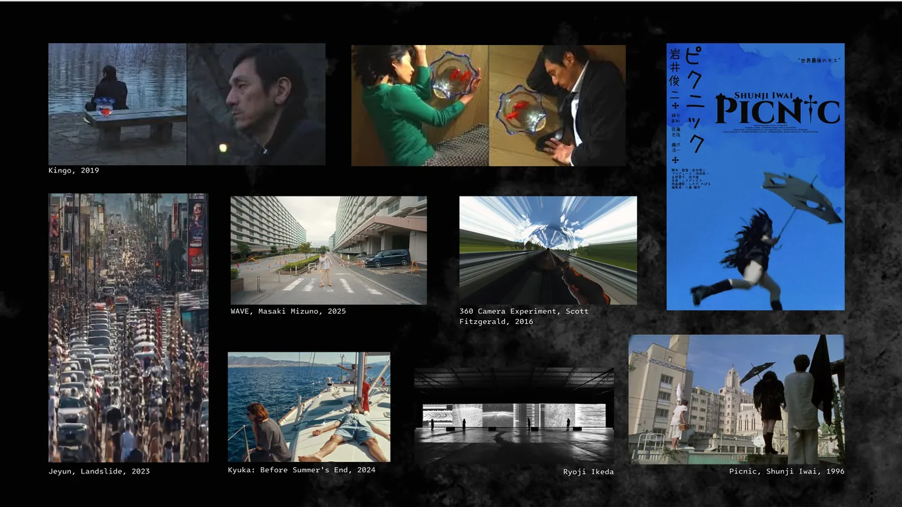
Films and visual storytelling projects are studied to establish the foundation of the project. I looked into both video-based projects that exhibit novel use of filming strategy as well as cinema projects that show aesthetics styles similar to what I want.
One design choice of this project is to leverage low fidelity video footages, which contrast with the current "AI art" aesthetics geared mainly towards a premium quality. As a project that explores alternative AI use in storytelling beyond prompt to media generation, I want the aesthetics to lay the foundation for audiences, encouraging them to enter this project with a different mental model. In Odyssey, all footages are filmed using a Sony DV Camcorder.
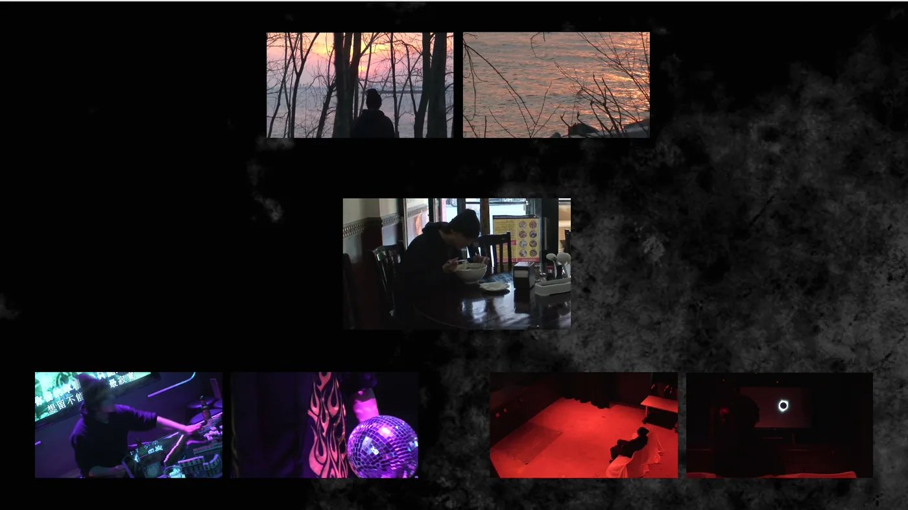
When wandering in an immersive theater experience like Sleep No More, there is no designated order of how audiences should visit the rooms, or part of these rooms. Through our physical movement, we bestow the narrative with the spatial qualities. In order to provide audience with this sense of spatial quality in this screen based experience, Odyssey organized its story in three different locations. The story is about the main character's worshipful yet conflictual relationship with the sun. He encountered the sun in three different occurrences at three different locations: walking through the woods and gazing at the sunset from its reflection; Entering a karaoke bar as a gambler, where the sun was incarnated as a powerful figure, using disco ball as his weapon; and stumbling into a theater, watching solar eclipse on a screen.
There is no designated order to visit these encounters, or parts of these encounters. It's up to the audiences to weave the fragments to a narrative at their own pace, navigating through this space of story.
Text for Navigation
The possibilities of assembling footage to a timeline is essentially infinite, and it is barely possible to control this using slider, which provide a limited dimension of traversal. To cope with this, Odyssey uses text for navigation, and this is where the machine learning system comes into play.
The machine learning system, adopted from a method proposed in UniVTG: Towards Unified Video-Language Temporal Grounding by Lin et. al in 2023, takes an open vocabulary input and ground it to a portion of the video that is the most closely align with the inputs. In the high dimensional space, the text entries are being encoded into vectors with the length of 512, a direction in a 512 dimensional space. Similar phrases will have similar encoding, thereby being mapped to a similar segment of video clips.
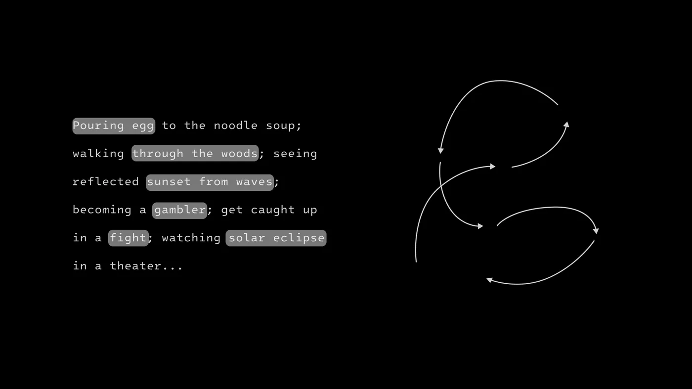
Interacting with odyssey, users can type any words or phrases, and the system will take them to the place where the footage is most closely aligned to their input. Typing several phrases, separated by semicolons, allow them to assemble a timeline, arranging segments playing one after another.
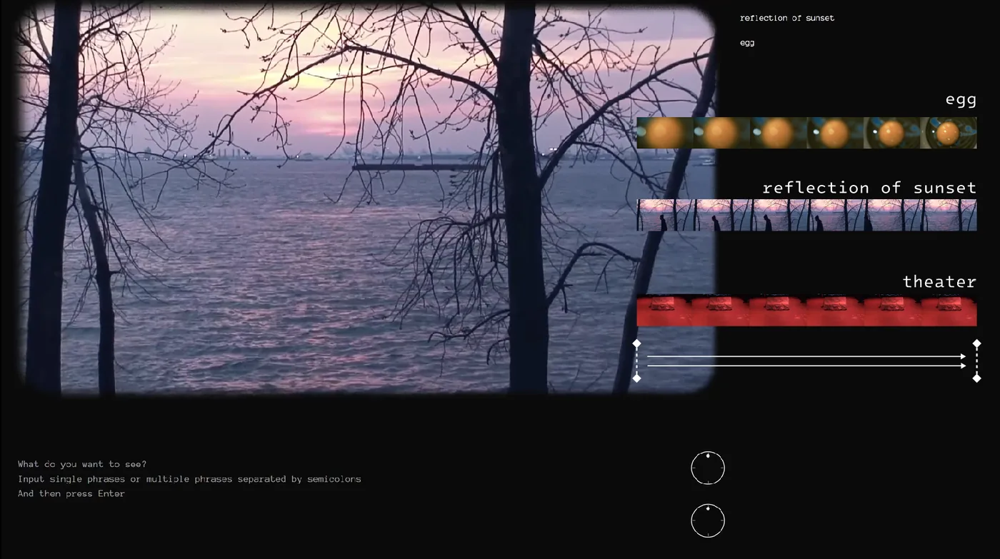
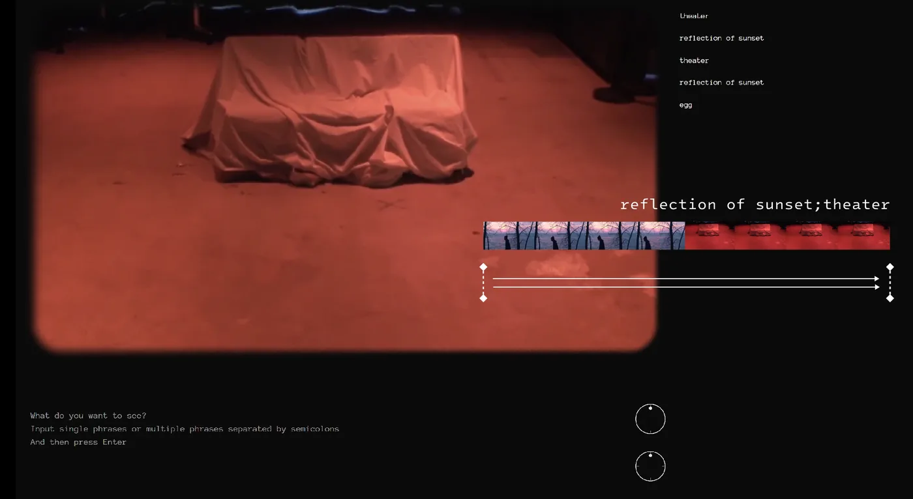
Interactions
The physical interface allow users to "wander across" the timelines they assembled. Turning the knob change the cutting frequency of the clips. A high cutting frequency indicates a narrower context window, where the audiences can see the highlight but not what happens before and after it.
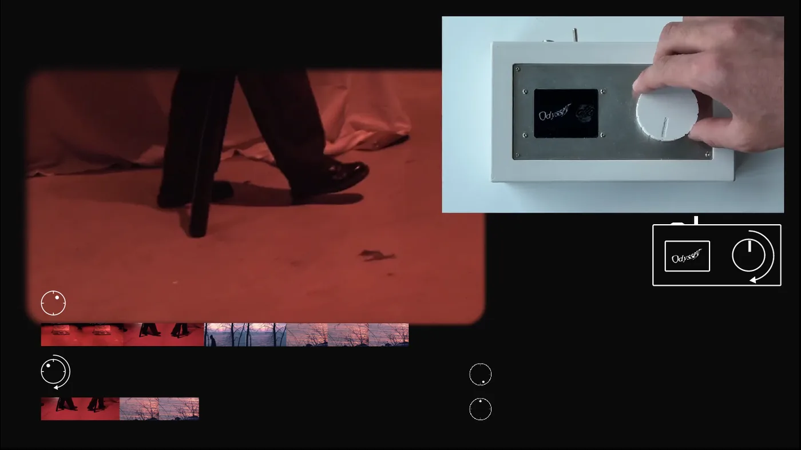
By pressing the shift key or the button on the interface while turning the knob, allow audiences to rewind the video for up to 15 seconds.
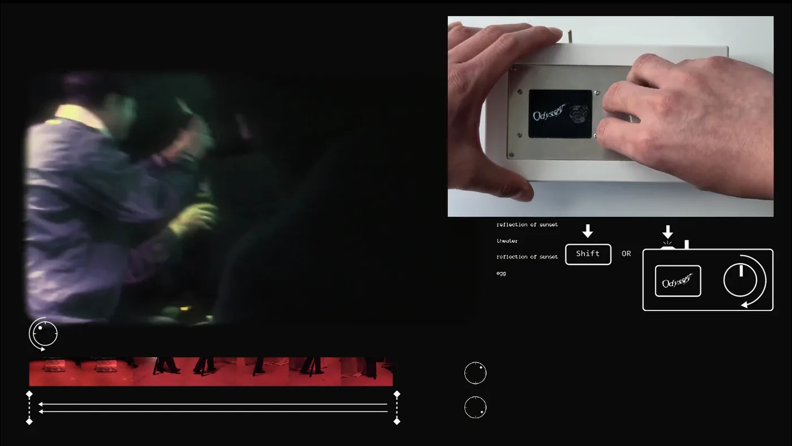
The interface is being made using a ESP32 and a BLDC motor. The BLDC motor is controlled with a simple FOC driver, allowing closed-loop control and haptic feedback. The motor will provide detent when controlling cutting frequency, which we usually perceive in a discrete manner (high, medium, low). When controlling the rewind, the motor will spin back to its position after rewinding, which correspond to the constant flow of time. The interface is modelled using Fusion 360 and 3D printed. The motor is controlled by the ESP32 via the simpleFOC library. Communications between the front end web, Python Machine Learning server, and the interface is enabled via HTTP request and websockets.
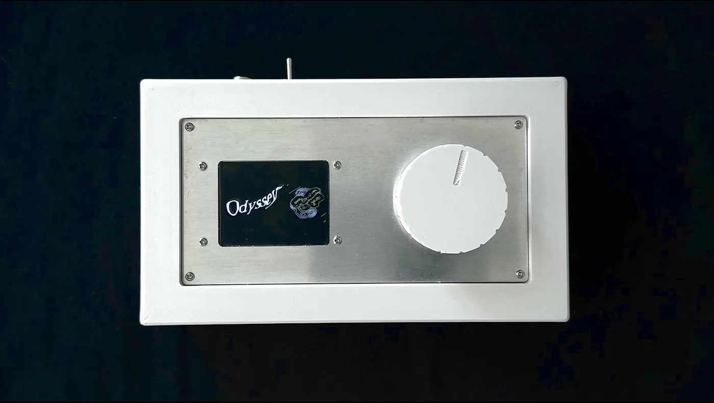
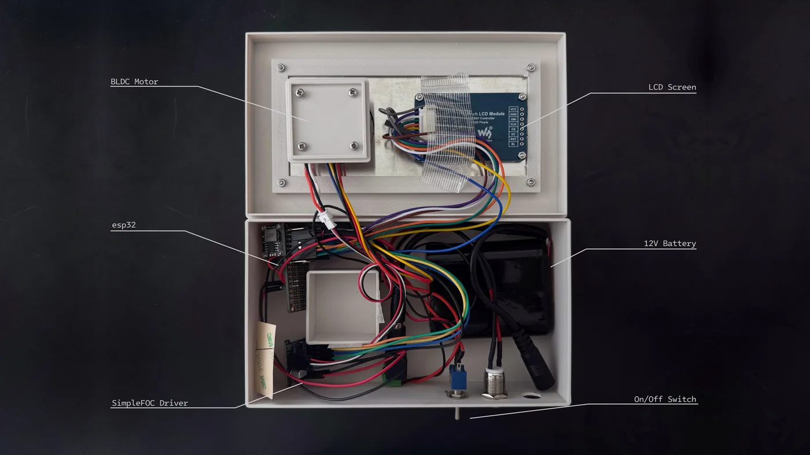
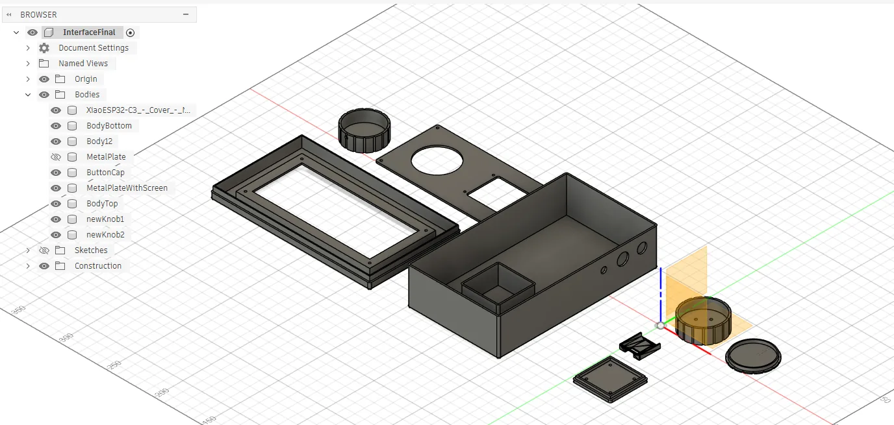
The map: a visualization of the space and trajectory
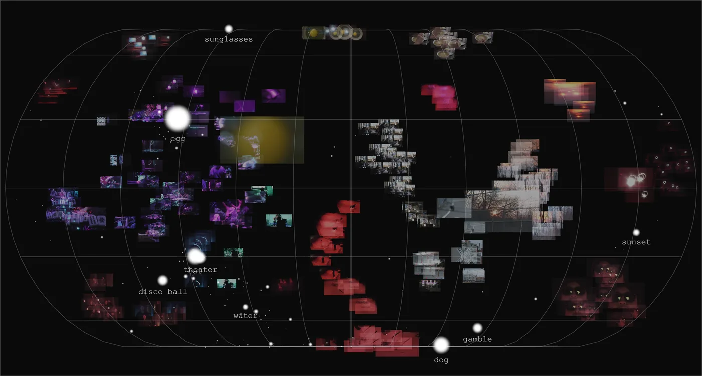
As the final part of the experience, users can view the real time map which shows snapshots of all the footages and where audiences are visiting in this space of story. The CLIP embeddings for images and text are trained with a L-2 regularization, which means that all coordinates are being forced onto a hypersphere. By using a U-MAP, this map reduced the hypersphere to a S2 sphere, and projected to a Cartesian coordinate system via natural earth projection — similar to how we get a sense of the earth by looking at a world map.
All user inputs for Odyssey are beings stored in a real-time Google Firebase database and being reflected immediately on the map. The snapshots of the video aggregates into different continents, and the size of the circles indicates how frequently people are visiting these places.
Research and References
Works by Teijo Pellinen, such as "Akvaario", is an early example of using semantic directions as a way to guide plot of a story. Films and video pieces such as Kingyo (Kohei Ando, 2009), Fight Club (David Fincher, 1999), and 360 camera experiments built by Scott Fitzgerald shows the use of unconventional, usually fragmented, storytelling strategy. Lev Manovich wrote about how navigable space can become a narrative in his book The Language of New Media (2001), and Jorge Luis Borges wrote about our high dimensional perception of time in his novel The Garden of Forking Paths. Current projects such as Concurrentrix (Jeyun Studio) and WAVE (Masaki Mizuno) shows the use of AI in video pieces beyond traditional text to media generation.